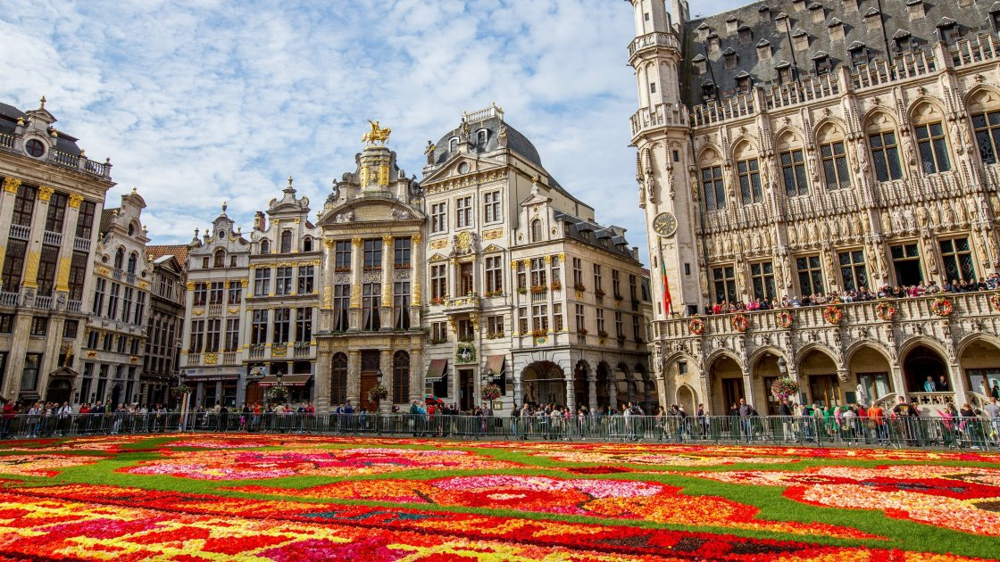

26.12.2005, м, Умань
КПІ імені Ігоря Сікорського
Мої хобі:
Мої улюблені книги:
Брюссель — столиця Бельгії та серце Європейського Союзу. Це місто поєднує в собі багату історію та сучасну політику, будучи домівкою для численних міжнародних організацій, включаючи Європарламент та штаб-квартиру НАТО. Архітектура Брюсселя варіюється від середньовічних площ, як Гран-Плас, до сучасних бізнес-центрів. Місто відоме своєю мультикультурною атмосферою, чудовою кухнею, зокрема бельгійськими вафлями та шоколадом, а також знаменитою статуєю "Маннекен-Піс".
